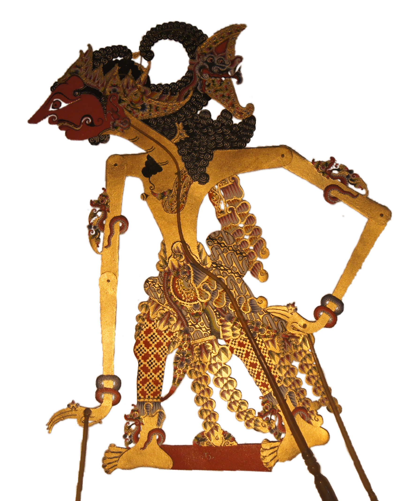

Quantiative Wayang Dictionary
Setyaki
Terms of address: Raden
Type: Human
Origin: India
Notes on the Sanskrit version: Known as Satyaki, he is a Yadava chieftein who helped the Pandavas in the Kurukshetra war.
Alternative names: Singamulangjaya, Wresniwira, Bima_Kunthing, Satyaki, Sencaki
Description in the Javanese version: He served as senapati in Dwarawati. When his mother [Wresini] was seven-month pregnant, she wanted to ride a tiger. [Setyajid]'s enemy, [Singamulangjaya] took advantage of this longing by transforming himself into a tiger. After [Wresini] climbed on his back, he ran off. Setyaki was thus born on the back of tiger. [Singamulangjaya] tried to attack the baby, but the baby became stronger each time [Singamulangjaya] bit him. Eventually, Setyaki defeated him, taking the name Singamulangjaya for himself. His son with Endang [Trirasa], named [Arya_sanga-sanga] would eventually become king of Lesanpura and serve as senopati of Yawastina during the reign of [Parikesit]. He was the charioteer of Kresna, when he attempted to negotiate a diplomatic solution to Korawa/Pandawa conflict before the Baratayuda war. In the Panjangmas story, he looses his amulet, the Gada_Wesikuning (called Lukitasari in the Yogyakarta tradition). This amulet, a mace, becomes a sage named Panjangmas. Setyaki's sworn enemies were [Burisrawa] and Kartamarma. He succeeded in killing them both: [Burisrawa] with the help of Arjuna during the Baratayuda war, and Kartamarma after the war was over.
Found in the follwing lakon (stories):
Family relationships
Siblings: Setyaboma, Adimanggala
Consorts: Trirasa
Offspring: Arya_sanga-sanga
More information
Aji / Wahyu / Pusaka: Gada_Wesikuning
Wanda: Kalngandang, Wisuna, Mimis, Kakek
Sources: Ensiklopedi Wayang Purwa, pp. 474-478; Sejarah Wayang Purwa, pp. 131-132; Ensiklopedi Wayang Indonesia, pp. 179-183 (Vol. VIII); Rupa dan Karakter Wayang Purwa, pp. 1052-1053
Network measurements for Setyaki
| Measurement | Value | |
|---|---|---|
| Degree | 51.0 | |
| Weighted Degree | 138.0 |  |
| Closeness Centrality | 0.585858585859 |  |
| Betweeness Centrality | 19.9588323923 |  |
| Eigenvector Centrality | 0.0 |  |
{kind=link}
Characters in the same adegan as Setyaki
| Character | Link weight |
|---|---|
| Character | Link weight |